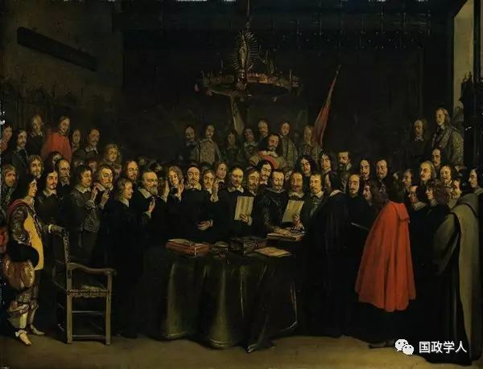
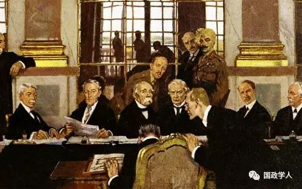
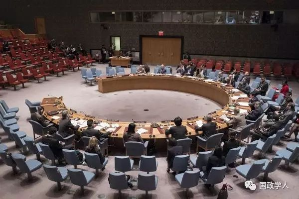
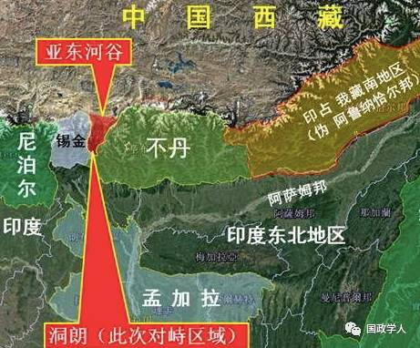
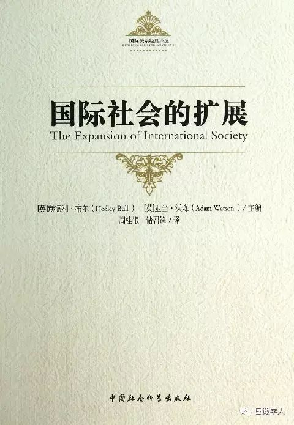

收录于合集

伊恩·布朗利
Ian Brownlie
著名国际法学家、联合国国际法委员会前任主席、联合国国际法院特别法官、英国王室法律顾问、英国科学院院士、牛津大学奇切利国际公法讲座教授、国际法研究院院士、欧洲原子能机构法院院长、牛津大学名誉教授，曾获得智利共和国博那多·奥希金斯勋章、挪威皇家杰出勋章、大英帝国勋章等。
时至1899年第一次海牙和会之际，一个完整而统一的国际关系体系已经形成。当然，使用“体系”一词仍有待商榷。毋庸置疑，这个体系形成之初在诸多方面都存有缺陷。然而在实践层面和满足现实需要上，国际关系体系却包含了一套广泛应用于贸易管理和处理国家间关系的制度、程序以及政治技巧。一些政治实体，如摩洛哥、埃及、索马里部落、布哈拉汗国和希瓦汗国，通过代理人或与他国签署的条约关系亦加入该体系。土耳其、中国、日本和暹罗在1899年时属于该体系的正式成员，但它们所享有的权利始终缺乏保障。瓦特尔在1785年发表的论著中，阐述了国家间法律特性的相关原则，这一原则成为推动国际体系向前发展的重要基础力量。
20世纪初以来，国际体系已经取得令人瞩目的成就，先后建立了一大批形态广泛、类型多样的独立国家。本文主要探讨国际法在国际体系发展过程中扮演的角色，或者更确切地说，是以国际法的形式展现国际体系巩固与聚合的长期演变进程。
总体上，国际法的作用必定会在两个方面上得以体现（这两个方面也有重叠之处）。一方面，学者们提出了与国际事务紧密相连的诸多概念和评判标准，这些概念和标准有些是包容性的和“自由派的”，也有些是排他性的和“学院派的”。另一方面，大量国家和学者的法律实践（对于不同历史时期的学者而言，其研究素材主要取自当时的国家行为）同样也能验证上述概念和标准在国际行为中的参与效果。
本章借用印象派的描述手法，采用一定的时间间隔和特定时期作为捷径来回放历史事件和思想理论的发展脉络。正是那些在长期复杂的历史进程中积淀下来的规则要素，而非那些仅仅用以记录史实的描述性话语，对国际社会的发展起到不可替代的作用。
1
欧洲国家和思想来源（1648-1750年）

尽管认为一切都将开始——1648年的想法很是可笑，但却有充足的理由表明在《闵斯特条约》和《威斯特伐利亚和约》缔结之时，“国际体系”就已确立。1648年欧洲达成广泛的政治安排，《威斯特伐利亚和约》带来的国家间的新型关系，以及国际规制在领土安排上扮演的长期重要角色，都能轻易证明这一论断。
宣称国际法以“欧洲为中心”的论调现在看来已显陈腐。起初，这种观点是被加以肯定的，现在看来只有当一群特定的国家集团总体上主宰了世界政治事务，这种情况才会发生。这是事实却非定论。如土耳其素丹或中国皇帝原本也有机会寻求全面霸权。历史上，国家关系体系总是由在文明上更具影响力的欧洲或基督教国家予以主宰。不管怎样，使用“欧洲”一词描述1750年以前的某些历史事件必然涉及一些语言错误，此外，17世纪的国家间关系即使用现代地理学衡量也绝非简单的“欧洲”。那个时期，国家关系“体系”总体上包括了格鲁吉亚王国、土耳其素丹、俄罗斯帝国、阿尔及尔、突尼斯、暹罗、威尼斯共和国、克里米亚鞑靼人汗国、摩洛哥和的黎波里。
到了18世纪中期，通过继承先前理论和思想创新，国际法涌现出了一套比较系统的概念，对国际体系的包容性和其他诸多方面产生了重要影响。早在威斯特伐利体系出现以前，欧洲就已存在基督教国家与异教徒关系实质的辩论，其实在穆斯林国家也存在类似的辩论，只是多数人早已忘却。与“海盗国家”相对应的“有组织国家”这一概念可以在宾客舒克的著作中找到。他关于国家主权和个体差异性的理论阐释较为成熟，但对“文明”功用的检验却相对欠缺。这一时期同时见证了均势理论的兴起。
国际法的历史学家们总是倾向于过分强调理论的重要性。在1648-1750年期间，思想界尚未超越体系成员应为“有组织国家”这个观点。在理论层面，尚不存在建立在宗教基础上的概念界定；在实践层面，主权问题没有妨碍各类公国和政治实体的正常外交活动。在强调理论概念的国际环境下，奥斯曼帝国登上18世纪的世界外交舞台至没有被认作具有任何革命性意义的事件。
2
地理扩张和思想延续（1750-1850年）
在这个世纪里，“体系”在实践和政治领域延伸扩展的诸多限制，被地理大发现和殖民活动一扫而光。世界政治融合与制图学扩展的主要例外只剩下撒哈拉以南的非洲。国际政治理论取得长足发展，以欧洲文明或宗教作为划分界限的旧式标准被弃。然而，在19世纪初期，国际公法领域依然普遍存在着大量的排他性原则——如“仅限于欧洲文明，基督教徒，或欧洲人”的表述——我们可以在惠顿那本颇有影响的著作中找到大量例证。
在实践范围内，外交体系的范围继续扩大并为美国因势利导，紧接着西班牙统治下的美洲继承国毫无理论依据地闯入了这一体系。国际法的严谨规则和外交行为没有被文化界限所分割，外交机构日益获得广泛理解。尤其重要的是，18世纪的外交活动和国际法内容在意识形态上基本保持中立，除遵循实用主义竞争原则以外不依赖任何特定的国际法原则。
这一时期的国际法涉及国家间关系的基本构成：
甲、国家的内涵及其附属物，如领海；
乙、建立和维持外交关系的机制
丙、缔约模式；
丁、战争法和中立法。
道德所关心的问题几乎总是附加的，如国家拥有发动战争的自由权利，而法律关注的重点只是中立的破坏。
最初国际法中唯一被广泛误读的概念是海盗行为，稍后奴隶贸易也加入其中。因为人权并不是这部法律所关注的焦点，然山它们却是政策关注的重点，正如对犹太人在俄罗斯帝国的遭遇保持缄默。国际法在实践层面和道义层面上保持不偏不倚便意味着扩张，于是我们说国际法体系本身具有强大的“输出能力”也就不足为奇了。
研究1750-1850年时期的缔约模式具有重要的指导意义。可以通过典型案例分析这段时期的情况，如查阅由克莱夫·派瑞和查理蒂·霍普金斯合编、英国政府出版局1970年出版的《英国条约总目(1101-1968年)》大事年表。通过研究，我们知道英国的“欧洲以外的”条约伙伴及其签署时间如下摩洛哥1750年；俄罗斯帝国1750年；阿尔及尔1751年的黎波里1751年突尼斯1751年；马拉地土邦1756年；海德拉巴君主1759年；莫卧儿帝国1763年；迈索尔1769年；美国（和约，1783年）尼泊尔网王1792年；阿萨姆国王1793年；马斯喀特1798年奥斯曼帝国1799年；波斯1801年；喀布尔1809年；康提1815年；阿散蒂1817年；马达加斯加国王1817年；帕拉卡1818年；柔佛1818年；巴林酋长国1820年；萨那1821年；拉普拉塔河联合省1825年；哥伦比亚1825年；暹罗国王1826年；艾哇(缅甸)1826年；巴西1826年；墨西哥1826年；委内瑞拉1834年；祖鲁国王1835年；邦尼国王1836年；智利1839年海地1839年；新西兰部落联盟（与80个部落酋长签订《怀唐伊条约》）1840年；得克萨斯1840年；厄瓜多尔1841年；绍阿国王1841年；乌拉圭1842年；巴苏陀酋长1843年；三明治群岛(夏威夷群岛)1843年；达荷美1847年；婆罗洲1847年；尼加拉瓜1848年；利比里亚1848年；危地马拉1849年；埃塞俄比亚1849年；哥斯达黎加1849年；多米尼加共和国1850年；秘鲁1850年。
《怀唐伊条约》是1840年时英国王室与毛利人之间签署的一项协议。它在新西兰建立了英国法律体系。同时，也确认了毛利人其土地和文化的拥有权。该条约被公认为新西兰的建国文献。该条约目前仍为现行文件
这些国家第一次出现就被记录在特定时期的《条约总目》上。而当时英国与印度次大陆、波斯湾以及西非和南非的各个规模不大的政治实体和统治者签订的林林总总的各式条约悉被省略。原因是英国在签订条约时关注的一个重要前提，就是要接受缔约另一方必须有能力与英国缔结这样的条约。
我们有理由相信，英国的缔约模式充分代表了当时典型的大国行为。更重要的，在缔约模式之外，稍后在亚洲和拉丁美洲逐渐引入的经常性外交代表制度。另外一个重要的国际法实践表现在领事任命机制和领事磋商机制的确立。担负外交任务的特别使团开始被派往更加遥远的国度。
3
外交体系扩张的性质几点保留意见

条约的签订、外交与领事关系的建立，显然为外交体系的扩展提供了现实基础。虽然厄瓜多尔和达荷美分别在1841年和1847年与英国缔结条约，但不足以说明这些政治实体已经具备必需的手段和思维，并能依据高效的、合法的与一致性等原则来处理国际事务。不过它们至少表明了一种遵守(国际法)的意愿和想法。此外，其他国家签署的类似条约和国家间的交往有力地促进了法律服务业的发展，同时也加深了对作为必要的外交和政治保护的各种专业法律知识的依赖。倘若只一味设定适合欧洲国家的外表华丽的法律专业标准，而忽略了弱小贫穷政治实体在国际舞台上的曲折发展历程是极不现实的。因此，为公平起见，开展国际法社会效果调査是一种十分有益的行为。
4
卢卡斯·斯坦迪的未解问题
回顾1750年以来的一个世纪里英国缔约史的发展脉络可以看出，英国政府显然希望在一个广泛的国际社会环境下对不同类型的国家关系做出正式安排。在实践领域，对政治实体进行分类算不上什么难题，可能遇到的问题只存在于政治实践领域，而非理论原则上。
19世纪中期以前，英国的外交实践展示出两种国际关系特征。首先，国际关系领域里的国家身份认同不存在地域差异或文化限制；其次，没有出现特意强调“国家”属性的正式国际标准。这一时期的法律学说反映了该时期的国际事务状况。某个国家的存在和主权并不取决于其他国家的承认。
到19世纪中期以及随后的几十年期间，国际关系理论的发展呈现出新面貌，相关例证可以在惠顿、菲利莫尔、霍尔和其他学者的著述中找到答案。新理论的一大特点是强调欧洲国家的承认，这种承认不依赖于任何客观存在的法律标准。国家变成一种更为重要的概念，它只与政治思想中的“民族”相关联，其国际法定义毫无实质性的意义：承认，作为政治同意的一个标签，似乎更需关心定义本身。于是，从19世纪中期开始，学术界出现了对国家的本质、存在目的等类似问题的深入探讨。布伦奇利的《国家理论》就是研究此类议题的巨著，它以英文和德文多次再版发行。
国家学说的迅速发展深受欧洲文化沙文主义和种族理论的影响。然而，实践层面的国家并未发生显著改变，对国家定义标准兴趣的缺乏却也催生出某种程度的包容性。比如，部落社会未被根本忽视，尽管其土地被认作无主地。这方面的理论成果连绵不断。在林德利的名著《国际法上的落后领土的占有与治理》一书中，他提出了如下观点：
作为介绍所有实例之前的一个例子……总体上，欧洲国家在确立对政治上的落后国家的统治时，主要采取了割让土地和武装占领的方法，而非以占领无主地作为享受权利的依据。
因为有着这样的传统，欧洲人非常倾向于与不同社会结构但拥有土地的政治实体缔结条约不过前提是它们必须具有清晰统一的社会结构。巴苏陀人和祖鲁人符合条件，而澳洲的土著人和火地岛的印第安人就不符合要求；封建制度很明显符合要求，隶属关系也不一定意味着脱离条约。国际法院在西撒哈拉咨询案中肯定了属于部落社会的土地不是无主地。
5
原则保守与实践灵活（1850-1950年）

1850-1880年，国际法概念朝向一个更加排他性的外交体系发展。霍尔写道：
现代文明国家认为国际法包含的某些行为规范约束了他们与别国的关系发展，因为总有一种类似强制的力量约束他国的忠诚民众遵守本国的法律；为防止触犯法律行为的发生，法律应当通过适当的强制方式予以执行。
同样，奥本海默也指出这些规则的本质“被认为是通过合法方式约束国与国之间的交往关系”。奥本海默还在另外一篇文章中说道：“文明国家都属于基督教国家，除了少数几个例外”。
毋庸置疑，观念的改变带来了现实效应。国家的概念本身变得更为重要，决定国家属性的重要标准已经演变为主观认知问题而不是法律标准的机械应用。
不管1850-1880年期间的国际法学说取得了多高成就，新学说的影响都不应被过分夸大。排除极少数例外，即便帝国主义时期的理论学说也不是僵化教条以及绝对的欧洲中心论。尽管如此，基督教和“文明”国家依然受到特别的偏好，与此相对，在19世纪末期，那些古老而孱弱的国家的命运，如埃塞俄比亚和暹罗正在遭受分裂、征服和胁迫而变得岌岌可危。然而，这时期外交运作模式保持了高度的灵活性。国际法的使用范围事实上没有被限定为欧洲的国家或是欧洲文化的国家。中国、日本、波斯、暹罗、埃塞俄比亚和马达加斯加也被吸引到广义上的外交体系中。
研究参加海牙和会国家的名单意义重大。1899年第二次海牙会议的26个国家中，两个国家来自美洲（美国和墨西哥），5个国家从某种意义上说来自亚洲（中国、日本、波斯、暹罗和土耳其）。当然，以不同区域作为划分标准的方法肯定存在缺陷。至于把土耳其或黑山归为一类或不同的国家种类纯属个人喜好问题。到了1907年，第二次海牙和会的与会国已经多达44个。亚洲的与会国不变，新增了16个拉丁美洲共和国出席会议，包括海地和多米尼加共和国。
1850-1950年期间的国际形势繁杂多变，呈现出许多新的元素。日本的崛起及其日益积极的外交态度与新独立亚洲国家努力寻求生存机会成为该时期的主要特点。印度和巴基斯坦两国都在1947年获得独立。直到1950年以前，世界民族国家的独立势头蓬勃兴旺。自相矛盾的是，此轮独立进程部分依据的原理是欧洲国家在1789-1884年间提出的自治原则，这一原则生效于1919-1920年期间的巴黎和会。
拉丁美洲国家的对外交往发展迅速。智利、阿根廷和巴西已然成为国际社会中的老练成员，拥有一大批经验老到的政客和职业的外交部门。智利和阿根廷两国议会就1881年边界协议问题的辩论显示出两国对待外交态度的成熟，以及对仲裁和航行中立等外交热门议题的敏锐度。
在国际联盟时代，一大批国家纷纷诞生，包括阿富汗、伊拉克、汉志—内志、阿尔巴尼亚、也门、南斯拉夫、捷克斯洛伐克、爱尔兰自由邦、芬兰、爱沙尼亚、拉脱维亚和立陶宛。这一时期的波兰终于能够恢复国家独立。
阿卜杜拉·伊本·沙特宣布建立以其家族的名字命名的沙特阿拉伯王国，成为第一代国王。
在英帝国内部，所谓的“旧自治领”地位问题长期被其与伦敦关系以及“内部”条约所掩盖。这就是成熟处理外部事务的机构在加拿大发展缓慢的原因。直到二战爆发的前10年，加拿大才独立承担起协商解决国际纠纷的责任。到了1923年，加拿大已经能够在谈判中拥有自主地位，有权签订条约。这方面的史实在1926年的帝国会议中有所记载。
在其他地域，早期的国际交往模式仿佛在19世纪末重新上演。非洲和亚洲的统治者被迫与英国签订各种条约，以求获得合法身份。签订条约的国家中，如巴苏陀、索马里等政治实体都不符合传统欧洲社会对于国家的定义。消灭国家特性的两种主要途径，还是领土割让条约与武力征服。缅甸、马达加斯加以及其他国家很早以前就丧失了独立地位。维持条约带来的实践后果，要么沦为像摩洛哥一样的半独立状态，要么像索马里一样被直接强加给殖民统治。
6
殖民主义的悖论
从欧洲政治扩张进入到现代阶段，一个巨大的悖论出现了。毫无疑问，英国和其他西方国家早已准备好与诸如巴苏陀和索岛里部落社会签订条约。在欧洲影响渗入以前，这些社会都不同程度地游离于国际外交体系之外，在被殖民以后，它们很快成为世界总体外交体系的组成部分——同时也失去了独立的国家特性。悖论就在这里欧洲的国家理念和民族自决思想被这些国家吸收采纳，进而引发了全球范围内的国家化运动，这场运动的目标指向却不是恢复欧洲人所期盼的旧式秩序。殖民主义以及其他外界影响给非洲和中东注入了一种十分激进的社会元素。最后，世界各地的不同社会形态，无论多么脆弱或虚伪，悉被纳入外交与国家的正统体系。上述结论始终有效，尽管存在某些特例，如摩洛哥和突尼斯，它们曾在昙花一现的区域外霸权时期保持着一段时间的政治延续性。
7
1850-1950年的主要特征
在某种程度上，这个时期的国际外交具有鲜明的革命性特征。国际法的构成形式和国际组织的运作方法都呈现出一系列的激进式发展：主权国家参与的国际组织的出现， 战争法的确立，仲裁与调解程序的发展，1922年第一个常设国际法庭建立，第一个为维护和平的普遍性国际组织出现，使用武力的法律依据发生质变，使用武力开始成为外交政策的选项之一。
尽管取得了上述惊人的发展成就，国际政治图景的变换却相对滞后。除奥斯曼土耳其帝国瓦解和欧洲出现一批新国家（波罗的海三个共和国、芬兰、捷克斯洛伐克以及其他国家）以外，该时期没有发生重大的政治变革——然而现在看来，这一时期实际可被视作非殖民化时代的序幕。
这个时期外交体系总体保守的原因来自多个方面。首先是欧洲和美国的强大实力对国际社会带来的影响。比如，南美洲国家很难对国际体系施加影响。南美洲国家（中国和日本亦是如此）热衷于使用国际法保护自身利益的做法着实令人同情，不过日本却是个例外。通过大量翻译英国、美国和法国国际法领域的书籍以及聘请外国专家顾问，中国、日本和暹罗很快学会了西方人的“游戏规则”。
另外一个造成外交体系保守的基本原因，是国际法内容继承了先前中庸与谦和的态度。法律关系的不平等多数是由坚持正统原则造成的。领事裁判权并不包含任何建设性或规范性的含义，相应地废除领事裁判权又是一个政治问题而非简单的法律或规范性问题。
尽管这一时期国际体系的保守色彩异常浓厚，但多边外交也始终存有自己的发展空间。换句话说，小国和中等国家的一致行动能够获得一定成效，虽然有时只能达成平局的结果。发展的内涵不再是简单地围绕欧洲国家。1930年国际联盟召开海牙国际法典编纂会议，终因成员国意见分歧过大而以失败收场，不过这也表明小国在常设国际法庭的机制设计上开始发挥实质性作用。当时的分歧无法通过与会核心人物之间的讨价还价达成妥协，正如现在经常发生的那样。实际上，这些立场分歧与区域政治没有关联。涉及对待外国人的条款时，“国民待遇”原则不仅受到拉丁美洲代表团的支持，也获得了欧洲小国的广泛赞同。不管怎样，拉丁美洲国家在联合国成立之初的投票权（当时占联合国51个成员国中的20个席位）隐含了一种潜在的区域主义角色。
8
1950-1960年
这个十年以朝鲜战争为开端。朝鲜战争可被视作一个过渡时期，此后，国际秩序从战争和"冷战"走向一个更加稳定的和平竞争时期。该时期同时见证了1955-1960年非殖民化浪潮的开端。在这个世界政治的重组时期，国际法的发展势头依然强劲，一些创新机制涌现，其中包括1949年国际法委员会的创立：国联时期的国际法及其机构的缺陷得到弥补。总体上，该时期国际法的创新灵感——至少那些成功的创新之处——可以追溯到西方“保守”国家的单独行为或集体行动。这些创新还包括海岸国家独享大陆架资源；联大1948年通过的《联合国人权宣言》，将发展和制定人权细则作为国际法标准。集团政治的作用或局限集中体现在国际法制定的会议框架上，这分别在1958年第一次联合国海洋法会议和1960年第二次联合国海洋法会议上得以体现。
9
1960-1980年
1960年后“第三世界”和“七十七国集团”开始作为一支重要的政治力量兴起，也同时成为激进法律和机制发展的载体。创立于1964年的77国集团，在1980年底的成员国已经多达122个。1964年日内瓦召开了影响深远的联合国贸易与发展会议。联合国成员构成的改变激发了第三世界建立新国际法规的热情或赋予现存诸多新政治概念以合法性。这些政治概念包括民族自决原则，自然资源永久主权概念、对“国际海床区域资源”享有。普遍继承权。以及关于主权变更相关的法律，如非殖民化（国际法学家们习惯称其为“国家继承”），关于边缘海域和超出海岸基线最大边界200英里以外的海床专属经济区概念，等等。
七十七国集团推动了多边外交模式的巨大变革。在一些政治前沿领域，这种变革带来了显著影响，如非洲的非殖民化运动和种族歧视问题。不过，外交变革所波及的影响程度逐渐被一些重要的限制因素所抵消。这些琐碎的限制因素虽然难以单个量化，但叠加起来就能产生不容小觑的能量。第一个限制因素，就是西方外交传统影响的持久有效性我们不应忘记，在某些核心议题上苏联的政治立场和西方集团是始终保持一致的。其次，一些新独立国家倾向于在非殖民化后走向政治保守，这种行为不会为人所称道，也不会明确地反映在政府的总体政策声明中再次，西方国家的外交代表们总能运用技术专长或借助外交施压手段，或两者结合，使其在国际法关键文本的制定上占据优势。这方面的例子可以参见1958年《日内瓦领海和毗连区公约》的制定和1962年联合国大会通过的第1803号决议，即关于《对天然资源的永久主权》决议的形成过程。
还有一些国际法规因在实际操作上趋向保守，亦可被归类为抵消因素，但就影响而言实则难以预料。这在近年来实行的“软法规”上有所体现，比如多边政治实体约束自我行为的指导原则。从1974年到1982年联合国第三次海洋法会议上通过的《海洋法公约》起草方案结构松散，正具有上述特点。
10
当今外交体系分析

当今外交体系有四个特点需要予以强调。第一，国家间关系自始至终的复杂多变性。我们可以从成百上千个事例中随便挑选一二作为佐证。在实际操作过程中，不同版本的海洋法被应用于不同的国家间的关系中第一种版本的海洋法是1958年以前采用的惯例法，第二种版本的海洋法是以1958年日内瓦公约为依据的法则，第三种版本既包含了前两种版本的某项条款，又根据最近的"非正式综合谈判文本"做出了一些修订，相关国家在具体运用中又对其进行了增补。更有甚者，1976年日本退出了它在1945年以后签署的所有海洋法条约，成为联合国海洋法“坚定的反对者”事件带来的直接后果是，如若再想要日本接受新的国际海洋法条约，就不得不借助一系列的政治交易实现。
第二个特点是，当前国际事务要么遵循习惯上的国际公法，要么遵从条约义务。主权国家的国际责任还可以在人权领域、经济关系和环境保护等方面体现出来。传统观点认为国际法拓展到新领域是不可避免的，也必将给世界各国带来诸多益处，其实这里得打上一个问号。除非民族国家的国内法律体系获得实质性完善，否则，寄希望于“国际立法带来进步”的想法就过于天真了。合法性和行政能力在国内治理和国际关系层面上具有同等重要的意义。现实中，合法性理念在国际事务中处于力不从心的境地。许多条约和法律机构的设置事实上只是出于商业需要。我们已经身处这样一种阶段，即几乎所有令人失望的预期都源自“国际法遭受破坏”。我们对“国际法表现”的预期是在一种极不现实的环境中萌生出来的，人为设定目标效用对于任何法律体系都显得盲目乐观。
第三个特点首先包含两种假设情形。假设非殖民化（经典或常规意义上）已经进展至尾声，假设所有的霸权行为和颠覆关系都已消亡，还剩下什么难题继续困扰人类呢？答案是残酷但却真实的——国际关系中的所有结构性顽疾依然存在。过去十来年的变革尽管意义非凡，其实不过是国际关系谱序的重新组合，是权力争夺的此消彼长。导致分歧与冲突的根本原因始终没有消除。一味鼓吹“科技进步”其实与国家关系毫不相干，除非争端和冲突升级到核武器交易的惊人地步。老生常谈的国际问题依旧存在。和平解决争端的机制或多或少还停留在1870年或1900年的水平。通过多数赞同原则制定新国际规则的做法始终与如何说服反对国家的接受底线相抵触，这个问题也将始终困扰联邦制国家。

近期因印度边防人员越境导致中印洞朗地区的对峙越发严峻，已经超过2013年中印双方在边界线东段僵持21天的“帐篷对峙”，成为1962年中印边界战争后最严重的一次事件。
第四个特点可谓最具普遍性国家间关系的实质几乎没有发生过任何改变。新成立国家大肆鼓吹的民族主义和狭隘宗教思想不仅在未来缺乏改变的可能，甚至还将注定落后于时代。尽管“国际主义”和其他一些时髦提法已经深入人心，但它们都与当今社会的实际情形相差基远。“国际社会的扩展”和“国际法的扩展”与世界一体化或国际事务的成熟处理机制毫不相干。现实情况是，越来越多的国家加入到争吵不休的行列中，越来越多的问题可以诱发国家间的争吵。目前看似唯一实用的国际法准则就是危机处理机制与和平解决纠纷原则。成功处理危机无法仰赖法律手段——尽管法律制度和工具也许能被用以组织协调和阐述方法，其实多数都属“马后炮”。要想在和平解决争端的外交行为上更为受用，必须精通法律技巧、熟悉法律机制，同时要求国家内部政治体制的完善。近年来，中国和越南在解决陆地和海洋边界问题上的做法就是令人沮丧的现实例子，两国采用的外交方式更适用于18世纪的欧洲。至少，瓦特尔与他同时代的学者们创设了国家间关系以及国家平等主张的结构性原则。正是国际法与和平解决争端机制担负起阻止平等的国家间关系滑向偏执的国家主义和神权政治的重任。(本文摘自《国际社会的扩展》，上海社会科学出版社 整理：里仝)

《国际社会的扩展》
赫德利•布尔和亚当•沃森主编的《国际社会的扩展》，1984年由牛津大学出版社出版发行。这本书是1959年成立的、以英国学派之名而著称于世的英国国际政治理论委员会的第二本学术影响堪称重大而深远的论文集。
您可能还会喜欢：